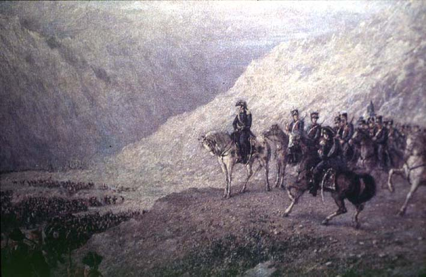

|
|  |
|
Augusto Ballerini, El paso de los Andes
|
Augusto Ballerini's 'El paso de los Andes' –another painting that revered San Martín, the commander of the Andean army, as founder of the fatherland– was exhibited at Buenos Aires in 1890 and acquired by the Argentine Museum of National History. Ballerini belonged to a group of artists of mostly Italian origin, whose families had settled in Argentina before the arrival of mass immigration. While the social status of their work distinguished them from their more recently arrived countrymen, it is interesting to observe that unlike literature (the passtime of the traditional Creole elite), the fine arts and music (another sphere largely dominated by Italian-born artists) did not entail any claim to political and diplomatic posts.
|